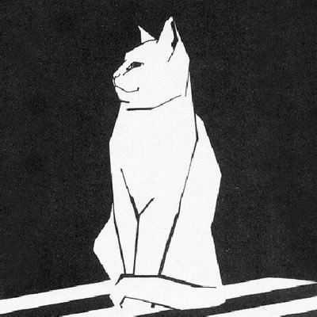

誠に勝手ながら、2019年3月31日をもってYahoo!ジオシティーズのサービスを終了することにいたしました。
ご利用のお客様にはご迷惑をおかけし、大変申し訳ございません。
サービス終了のお知らせ - Yahoo!ジオシティーズ
aerial_fox さんが描いてくださいました！
yocificoのホームページ
まずはタイトルと文章を入力しましょう。メインの写真をお気に入りの写真に変更すればあなただけのホームページの出来上がりです。
リンク
- 2018/10/09
 aerial_foxのホームページ
aerial_foxのホームページ - 2018/10/09 mutsusnのホームページ
Follow @yocifico 